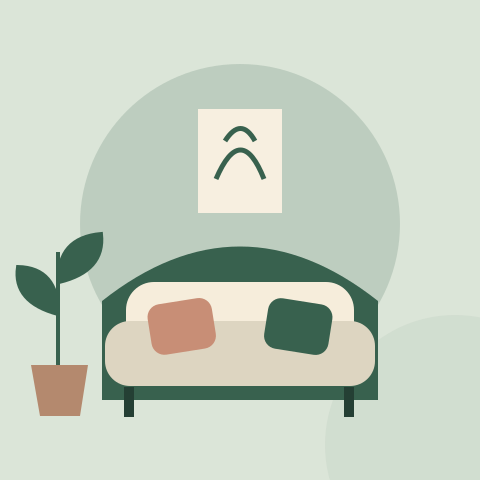

A Weekly Check-In You Will Actually Use
A short, flexible conversation for sharing appreciation, noticing strain, and making one useful plan.
Read the articleFor the life you are building together
Thoughtful reads for couples navigating communication, shared responsibilities, and the small rituals that keep a relationship feeling like a team.
Explore the journal
Everyday connection · 2 minute read
A short, flexible conversation for sharing appreciation, noticing strain, and making one useful plan.
Start hereFind something for this moment
A small library. Plenty to take into real life.
A short, flexible conversation for sharing appreciation, noticing strain, and making one useful plan.
Read the articleMake household responsibilities clearer, including the planning that happens before a task gets done.
Read the articleA practical way to stop an escalating disagreement and make a clear plan to return.
Read the articleCreate a shared view of expenses and expectations while preserving privacy, choice, and financial independence.
Read the articleSmall invitations can help you reconnect without making affection another obligation.
Read the articleAcknowledge the specific harm, listen without rushing forgiveness, and follow through on a concrete change.
Read the articleNo matches yet. Try another word or choose “All reads.”
A note on our approach
There is no one-size-fits-all formula for a good relationship. We offer ideas you can adapt, language you can try, and reminders that your comfort and choices matter.
Read our editorial standards